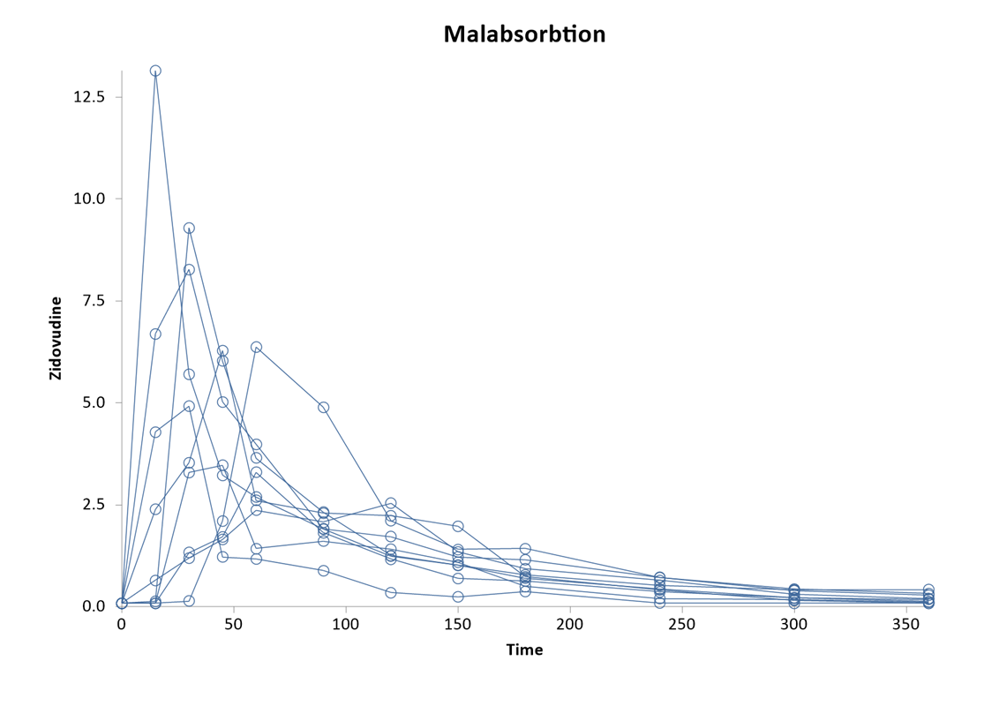
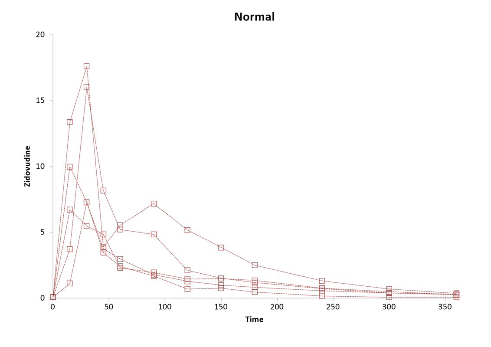
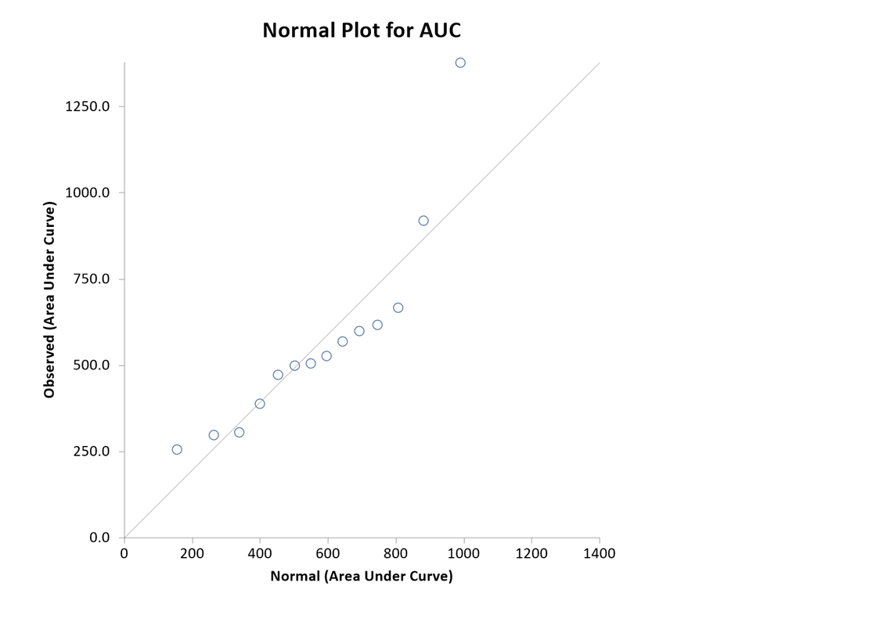
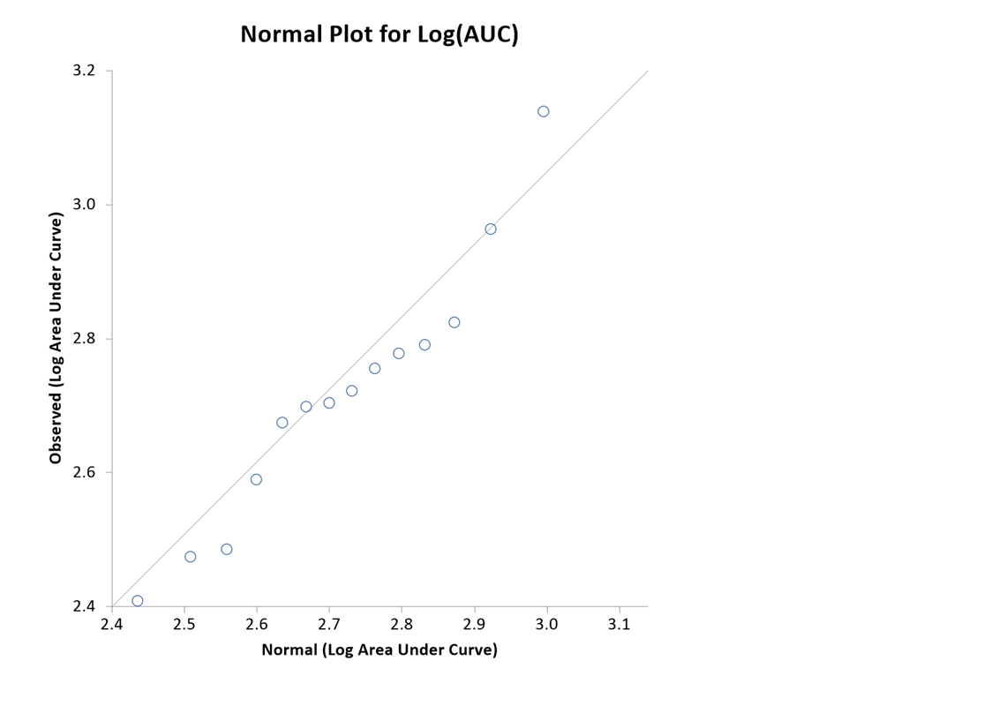
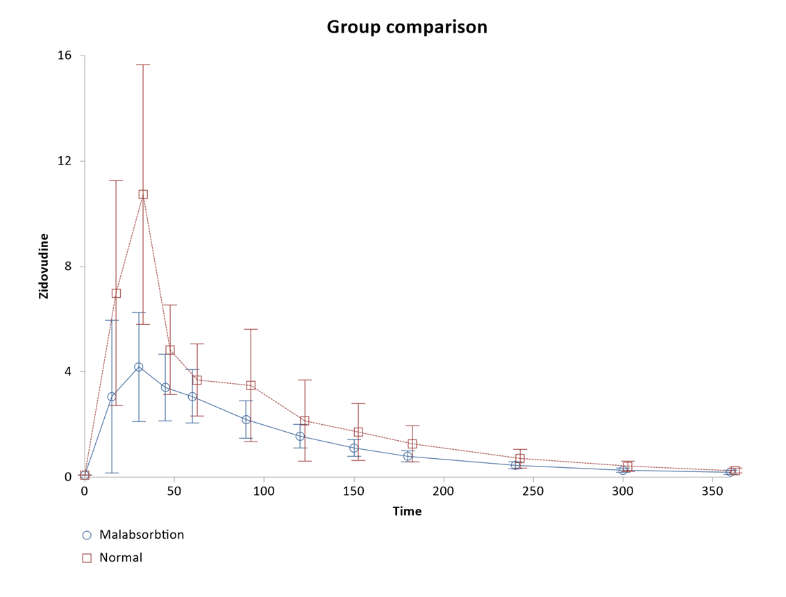

Time Series Summary: Area Under Curve
Menu location: Analysis_Descriptive_Time Series Summary.
This function summarises serially sampled data as the area under the time-observation or time-concentration curve (Bland 2000, Wolfsegger 2007, Jaki & Wolfsegger 2009).
The methods presented here are more commonly applied to peaked data than to growth data (Matthews et al. 1990).
If no observation was made at time zero you are asked whether to treat the observation at time zero as zero; if you answer yes, a zero observation at time zero is added for every subject, so that each subject's baseline is zero and the area under the curve starts from the origin.
A row without an observation is left out. If the same observation is entered twice for a subject at a time it is taken once; two observations that differ, for the same subject at the same time, are refused.
The area under the curve (AUC) is calculated using the linear trapezoidal rule for each subject. The mean AUC of a group is summarised with the standard deviation of the subjects' AUCs and its standard error SD/√n; the t interval uses n − 1 degrees of freedom (Bland 2000). The weighted variance of Wolfsegger 2007 equation 4 is for serial-sampling designs in which each subject contributes a single time point and is not used for complete profiles.
$\displaystyle \begin{array}{l} \displaystyle w_1 = \frac{1}{2}\Biggl(t_2-t_1\Biggr) \\ \displaystyle w_j = \frac{1}{2}\Biggl(t_{j+1}-t_{j-1}\Biggr)\,\Biggl(2\le j\le J-1\Biggr) \\ \displaystyle w_J = \frac{1}{2}\Biggl(t_J-t_{J-1}\Biggr) \\ \displaystyle \widehat{AUC_k} = \sum_{j=1}^{J}w_j\bar{X}_{jk} \\ \displaystyle \operatorname{var}\Biggl[\widehat{AUC_k}\Biggr] = \sum_{j=1}^{J}w_j^2\delta_{jk}^2 n_{jk}^{-1} \end{array}$
...where t 1-J are times of observations in a series from 1 to J, AUC is the area under the curve for the kth subject from baseline to the last measured time point, w are the weights applied to the observations (X), n is the number of observations at each time point,and sigma squared is the variance of the observations at each time point.
For the t interval of a group's mean AUC the degrees of freedom are n − 1, where n is the number of subjects in the group; for the comparison of two groups the Welch-Satterthwaite degrees of freedom are df = (v1 + v2)² / [v1²/(n1 − 1) + v2²/(n2 − 1)], where v = SD²/n is the variance of each group's mean AUC calculated from the subjects' AUCs.
A bootstrap-t confidence interval may also be calculated: whole subjects (each with their observations at every time point) are resampled with replacement within the group; for each bootstrap sample the mean AUC and its standard error SE* = SD*/sqrt(n) are calculated from the resampled subjects' AUCs and the standardised statistic t* = (AUC - AUC*)/SE* is collected; the alpha/2 and 1-alpha/2 centiles of these t* values are then used to form the interval from AUC + t*(alpha/2) SE to AUC + t*(1-alpha/2) SE.
When there are two groups the AUCs are compared using a two sample t test on the subjects' AUCs with unequal variances (Welch, Satterthwaite degrees of freedom). A bootstrap t test is also performed resampling whole subjects within each group.
The areas under the curve of all the subjects, and their logarithms (base 10), are plotted against normal scores, and the square of the correlation is given with each plot. A plot that cannot be drawn is left out, and the report says why: the plot of the logarithms if an area is zero or below (a subject with one observation has an area of zero), and both plots if there are fewer than two areas or the areas are all the same.
Example
From Bland (2000).
Test workbook (Other worksheet: Group, Time, Zidovudine, Patient).
Blood levels of zidovudine or AZT in patients a different times after oral dosing, comparing those with and without malabsorbtion:
|
Group |
Time | Zidovudine | Patient |
|
Malabsorbtion |
0 | 0.08 | 1 |
| Malabsorbtion | 15 | 13.15 | 1 |
| Malabsorbtion | 30 | 5.70 | 1 |
| Malabsorbtion | 45 | 3.22 | 1 |
| Malabsorbtion | 60 | 2.69 | 1 |
| Malabsorbtion | 90 | 1.91 | 1 |
| Malabsorbtion | 120 | 1.72 | 1 |
| Malabsorbtion | 150 | 1.22 | 1 |
| Malabsorbtion | 180 | 1.15 | 1 |
| Malabsorbtion | 240 | 0.71 | 1 |
| Malabsorbtion | 300 | 0.43 | 1 |
| Malabsorbtion | 360 | 0.32 | 1 |
| Malabsorbtion | 0 | 0.08 | 2 |
| Malabsorbtion | 15 | 0.08 | 2 |
| Malabsorbtion | 30 | 0.14 | 2 |
| Malabsorbtion | 45 | 2.10 | 2 |
| Malabsorbtion | 60 | 6.37 | 2 |
| Malabsorbtion | 90 | 4.89 | 2 |
| Malabsorbtion | 120 | 2.11 | 2 |
| Malabsorbtion | 150 | 1.40 | 2 |
| Malabsorbtion | 180 | 1.42 | 2 |
| Malabsorbtion | 240 | 0.72 | 2 |
| Malabsorbtion | 300 | 0.39 | 2 |
| Malabsorbtion | 360 | 0.28 | 2 |
| ... | ... | ... | ... |
To analyse these data using StatsDirect you must first enter them into a workbook or open the test workbook. Then select Time Series Summary from the Descriptive section of the Analysis menu.
Time Series Summary
Group: Malabsorbtion
| Time | Observations | Mean | SD | SE | Median | IQR |
| 0 | 9 | 0.08 | 0.00 | 0.00 | 0.08 | 0.00 |
| 15 | 9 | 3.06 | 4.44 | 1.48 | 0.64 | 4.20 |
| 30 | 9 | 4.18 | 3.17 | 1.06 | 3.53 | 4.37 |
| 45 | 9 | 3.41 | 1.94 | 0.65 | 3.22 | 3.31 |
| 60 | 9 | 3.06 | 1.55 | 0.52 | 2.69 | 1.28 |
| 90 | 9 | 2.19 | 1.10 | 0.37 | 1.91 | 0.48 |
| 120 | 9 | 1.56 | 0.67 | 0.22 | 1.41 | 0.87 |
| 150 | 9 | 1.11 | 0.48 | 0.16 | 1.09 | 0.33 |
| 180 | 9 | 0.80 | 0.33 | 0.11 | 0.73 | 0.30 |
| 240 | 9 | 0.45 | 0.22 | 0.07 | 0.43 | 0.28 |
| 300 | 9 | 0.26 | 0.13 | 0.04 | 0.22 | 0.22 |
| 360 | 9 | 0.20 | 0.12 | 0.04 | 0.18 | 0.17 |
| Subject ID | Baseline | Min. observation | Max. observation | Time to max. | Slope to max. | AUC |
| 1 | 0.08 | 0.08 | 13.15 | 15 | 0.87 | 667.425 |
| 2 | 0.08 | 0.08 | 6.37 | 60 | 0.10 | 569.625 |
| 3 | 0.08 | 0.08 | 3.47 | 45 | 0.09 | 306.000 |
| 4 | 0.08 | 0.08 | 3.30 | 60 | 0.05 | 298.200 |
| 5 | 0.08 | 0.08 | 8.27 | 30 | 0.27 | 617.850 |
| 6 | 0.08 | 0.08 | 4.92 | 30 | 0.16 | 256.275 |
| 7 | 0.08 | 0.08 | 9.29 | 30 | 0.31 | 527.475 |
| 8 | 0.08 | 0.08 | 2.54 | 120 | 0.02 | 388.875 |
| 9 | 0.08 | 0.08 | 6.28 | 45 | 0.13 | 505.875 |
Subjects: 9
Total (mean per time point) observations: 108 (9)
Mean (SD) area under curve (AUC): 459.73 (151.28)
SE of mean AUC: 50.43
95% t-interval for mean AUC: 343.45 to 576.01
95% bootstrap-t interval for mean AUC (1000000 iterations, seed 2944296): 335.19 to 575.80
95% z-interval for mean AUC: 360.90 to 558.56
Median (IQR) area under curve: 505.88 (263.63)
Median (IQR) time to maximum: 45 (30)
Median (IQR) slope to maximum: 0.13 (0.18)
Mean (SD) slope to maximum: 0.22 (0.26)

Group: Normal
| Time | Observations | Mean | SD | SE | Median | IQR |
| 0 | 5 | 0.08 | 0.00 | 0.00 | 0.08 | 0 |
| 15 | 5 | 6.98 | 4.87 | 2.18 | 6.72 | 6.26 |
| 30 | 5 | 10.73 | 5.63 | 2.52 | 7.28 | 8.75 |
| 45 | 5 | 4.83 | 1.94 | 0.87 | 3.90 | 1.07 |
| 60 | 5 | 3.69 | 1.56 | 0.70 | 2.97 | 2.79 |
| 90 | 5 | 3.49 | 2.44 | 1.09 | 1.95 | 3.06 |
| 120 | 5 | 2.14 | 1.76 | 0.79 | 1.46 | 0.85 |
| 150 | 5 | 1.72 | 1.23 | 0.55 | 1.49 | 0.51 |
| 180 | 5 | 1.27 | 0.77 | 0.35 | 1.18 | 0.51 |
| 240 | 5 | 0.71 | 0.41 | 0.18 | 0.72 | 0.2 |
| 300 | 5 | 0.41 | 0.22 | 0.10 | 0.41 | 0.12 |
| 360 | 5 | 0.25 | 0.11 | 0.05 | 0.28 | 0.04 |
| Subject ID | Baseline | Min. observation | Max. observation | Time to max. | Slope to max. | AUC |
| 10 | 0.08 | 0.08 | 16.02 | 30 | 0.53 | 919.875 |
| 11 | 0.08 | 0.08 | 6.72 | 15 | 0.44 | 599.850 |
| 12 | 0.08 | 0.08 | 9.98 | 15 | 0.66 | 499.500 |
| 13 | 0.08 | 0.08 | 7.27 | 30 | 0.24 | 472.875 |
| 14 | 0.08 | 0.08 | 17.61 | 30 | 0.58 |
1377.975 |
Subjects: 5
Total (mean per time point) observations: 60 (5)
Mean (SD) area under curve (AUC): 774.02 (381.58)
SE of mean AUC: 170.65
95% t-interval for mean AUC: 300.22 to 1247.81
95% bootstrap-t interval for mean AUC (1000000 iterations, seed 2944296): 448.85 to 2699.11
95% z-interval for mean AUC: 439.55 to 1108.48
Median (IQR) area under curve: 599.85 (420.38)
Median (IQR) time to maximum: 30 (15)
Median (IQR) slope to maximum: 0.53 (0.14)
Mean (SD) slope to maximum: 0.49 (0.16)

AUC Distribution

R-square for AUC vs. normal scores: 0.80

R-square for log(AUC) vs. normal scores: 0.94
Group comparison: Malabsorbtion vs. Normal
Welch t (SE of difference): -1.77 (177.94)
DF (Satterthwaite): 4.71
Two sided P = 0.1412
AUC difference (95% CI): -314.28 (-780.27 to 151.70)
Bootstrapped with 1000000 iterations, seed 2944296
Two sided bootstrap P = 0.1809
95% bootstrap-t interval: -1240.73 to 35.45

 R code
R code
This R code reproduces the example above. It needs no packages and was checked with R 4.6.1. Paste it into R, or save it as a script and run it.
# Time series summary: the StatsDirect help example (Bland 2000, blood levels of
# zidovudine after an oral dose in patients with and without malabsorption) in R
# The data are the Group, Time, Zidovudine and Patient columns of the Other
# worksheet of the StatsDirect test workbook.
d <- data.frame(
Time = c(0, 0, 0, 0, 0, 0, 0, 0, 0, 0, 0, 0, 0, 0, 15, 15, 15, 15, 15, 15, 15,
15, 15, 15, 15, 15, 15, 15, 30, 30, 30, 30, 30, 30, 30, 30, 30, 30, 30, 30,
30, 30, 45, 45, 45, 45, 45, 45, 45, 45, 45, 45, 45, 45, 45, 45, 60, 60, 60,
60, 60, 60, 60, 60, 60, 60, 60, 60, 60, 60, 90, 90, 90, 90, 90, 90, 90, 90,
90, 90, 90, 90, 90, 90, 120, 120, 120, 120, 120, 120, 120, 120, 120, 120,
120, 120, 120, 120, 150, 150, 150, 150, 150, 150, 150, 150, 150, 150, 150,
150, 150, 150, 180, 180, 180, 180, 180, 180, 180, 180, 180, 180, 180, 180,
180, 180, 240, 240, 240, 240, 240, 240, 240, 240, 240, 240, 240, 240, 240,
240, 300, 300, 300, 300, 300, 300, 300, 300, 300, 300, 300, 300, 300, 300,
360, 360, 360, 360, 360, 360, 360, 360, 360, 360, 360, 360, 360, 360),
Zidovudine = c(0.08, 0.08, 0.08, 0.08, 0.08, 0.08, 0.08, 0.08, 0.08, 0.08,
0.08, 0.08, 0.08, 0.08, 13.15, 0.08, 0.08, 0.08, 6.69, 4.28, 0.13, 0.64,
2.39, 3.72, 6.72, 9.98, 1.12, 13.37, 5.7, 0.14, 3.29, 1.33, 8.27, 4.92,
9.29, 1.19, 3.53, 16.02, 5.48, 7.28, 7.27, 17.61, 3.22, 2.1, 3.47, 1.71,
5.02, 1.22, 6.03, 1.65, 6.28, 8.17, 4.84, 3.46, 3.77, 3.9, 2.69, 6.37, 1.42,
3.3, 3.98, 1.17, 3.65, 2.37, 2.61, 5.21, 2.3, 2.42, 2.97, 5.53, 1.91, 4.89,
1.61, 1.81, 1.9, 0.88, 2.32, 2.07, 2.29, 4.84, 1.95, 1.69, 1.78, 7.17, 1.72,
2.11, 1.41, 1.16, 1.24, 0.34, 1.25, 2.54, 2.23, 2.12, 1.46, 0.7, 1.27, 5.16,
1.22, 1.4, 1.09, 0.69, 1.01, 0.24, 1.02, 1.34, 1.97, 1.5, 1.49, 0.76, 0.99,
3.84, 1.15, 1.42, 0.49, 0.63, 0.78, 0.37, 0.7, 0.93, 0.73, 1.18, 1.34, 0.47,
0.83, 2.51, 0.71, 0.72, 0.2, 0.36, 0.52, 0.09, 0.43, 0.64, 0.41, 0.72, 0.77,
0.18, 0.57, 1.31, 0.43, 0.39, 0.17, 0.22, 0.41, 0.08, 0.21, 0.3, 0.15, 0.41,
0.5, 0.08, 0.38, 0.7, 0.32, 0.28, 0.11, 0.12, 0.42, 0.08, 0.18, 0.2, 0.08,
0.29, 0.28, 0.08, 0.25, 0.37),
Patient = c(1, 2, 3, 4, 5, 6, 7, 8, 9, 10, 11, 12, 13, 14, 1, 2, 3, 4, 5, 6,
7, 8, 9, 10, 11, 12, 13, 14, 1, 2, 3, 4, 5, 6, 7, 8, 9, 10, 11, 12, 13, 14,
1, 2, 3, 4, 5, 6, 7, 8, 9, 10, 11, 12, 13, 14, 1, 2, 3, 4, 5, 6, 7, 8, 9,
10, 11, 12, 13, 14, 1, 2, 3, 4, 5, 6, 7, 8, 9, 10, 11, 12, 13, 14, 1, 2, 3,
4, 5, 6, 7, 8, 9, 10, 11, 12, 13, 14, 1, 2, 3, 4, 5, 6, 7, 8, 9, 10, 11, 12,
13, 14, 1, 2, 3, 4, 5, 6, 7, 8, 9, 10, 11, 12, 13, 14, 1, 2, 3, 4, 5, 6, 7,
8, 9, 10, 11, 12, 13, 14, 1, 2, 3, 4, 5, 6, 7, 8, 9, 10, 11, 12, 13, 14, 1,
2, 3, 4, 5, 6, 7, 8, 9, 10, 11, 12, 13, 14),
Group = c("Malabsorbtion", "Malabsorbtion", "Malabsorbtion", "Malabsorbtion",
"Malabsorbtion", "Malabsorbtion", "Malabsorbtion", "Malabsorbtion",
"Malabsorbtion", "Normal", "Normal", "Normal", "Normal", "Normal",
"Malabsorbtion", "Malabsorbtion", "Malabsorbtion", "Malabsorbtion",
"Malabsorbtion", "Malabsorbtion", "Malabsorbtion", "Malabsorbtion",
"Malabsorbtion", "Normal", "Normal", "Normal", "Normal", "Normal",
"Malabsorbtion", "Malabsorbtion", "Malabsorbtion", "Malabsorbtion",
"Malabsorbtion", "Malabsorbtion", "Malabsorbtion", "Malabsorbtion",
"Malabsorbtion", "Normal", "Normal", "Normal", "Normal", "Normal",
"Malabsorbtion", "Malabsorbtion", "Malabsorbtion", "Malabsorbtion",
"Malabsorbtion", "Malabsorbtion", "Malabsorbtion", "Malabsorbtion",
"Malabsorbtion", "Normal", "Normal", "Normal", "Normal", "Normal",
"Malabsorbtion", "Malabsorbtion", "Malabsorbtion", "Malabsorbtion",
"Malabsorbtion", "Malabsorbtion", "Malabsorbtion", "Malabsorbtion",
"Malabsorbtion", "Normal", "Normal", "Normal", "Normal", "Normal",
"Malabsorbtion", "Malabsorbtion", "Malabsorbtion", "Malabsorbtion",
"Malabsorbtion", "Malabsorbtion", "Malabsorbtion", "Malabsorbtion",
"Malabsorbtion", "Normal", "Normal", "Normal", "Normal", "Normal",
"Malabsorbtion", "Malabsorbtion", "Malabsorbtion", "Malabsorbtion",
"Malabsorbtion", "Malabsorbtion", "Malabsorbtion", "Malabsorbtion",
"Malabsorbtion", "Normal", "Normal", "Normal", "Normal", "Normal",
"Malabsorbtion", "Malabsorbtion", "Malabsorbtion", "Malabsorbtion",
"Malabsorbtion", "Malabsorbtion", "Malabsorbtion", "Malabsorbtion",
"Malabsorbtion", "Normal", "Normal", "Normal", "Normal", "Normal",
"Malabsorbtion", "Malabsorbtion", "Malabsorbtion", "Malabsorbtion",
"Malabsorbtion", "Malabsorbtion", "Malabsorbtion", "Malabsorbtion",
"Malabsorbtion", "Normal", "Normal", "Normal", "Normal", "Normal",
"Malabsorbtion", "Malabsorbtion", "Malabsorbtion", "Malabsorbtion",
"Malabsorbtion", "Malabsorbtion", "Malabsorbtion", "Malabsorbtion",
"Malabsorbtion", "Normal", "Normal", "Normal", "Normal", "Normal",
"Malabsorbtion", "Malabsorbtion", "Malabsorbtion", "Malabsorbtion",
"Malabsorbtion", "Malabsorbtion", "Malabsorbtion", "Malabsorbtion",
"Malabsorbtion", "Normal", "Normal", "Normal", "Normal", "Normal",
"Malabsorbtion", "Malabsorbtion", "Malabsorbtion", "Malabsorbtion",
"Malabsorbtion", "Malabsorbtion", "Malabsorbtion", "Malabsorbtion",
"Malabsorbtion", "Normal", "Normal", "Normal", "Normal", "Normal"))
# 2 decimal places, with halves rounded up as StatsDirect rounds them
two <- function(x) {
formatC(sign(x) * floor(abs(x) * 100 + 0.5 + 1e-9) / 100, digits = 2, format = "f",
drop0trailing = TRUE)
}
iqr <- function(x) diff(quantile(x, c(0.25, 0.75), type = 2))
# R has no standard function for this summary, so it is built here. For each
# group and time: the number of observations, mean, SD, SE, median and IQR
# (quartiles by centile type 1, which is type 2 in R).
for (g in unique(d$Group)) {
cat("Group:", g, "\n")
s <- d[d$Group == g, ]
cat("Time Observations Mean SD SE Median IQR\n")
for (t in sort(unique(s$Time))) {
y <- s$Zidovudine[s$Time == t]
cat(t, length(y), two(mean(y)), two(sd(y)), two(sd(y) / sqrt(length(y))),
two(median(y)), two(iqr(y)), "\n")
}
# For each subject: the baseline (the value at time 0), the smallest and
# largest values, the time of the largest, the slope of a least squares line
# through the values up to the largest, and the area under the curve by the
# trapezium rule
cat("Subject ID Baseline Min. observation Max. observation Time to max.",
"Slope to max. AUC\n")
auc <- slope <- tmax <- c()
for (id in sort(unique(s$Patient))) {
p <- s[s$Patient == id, ]
p <- p[order(p$Time), ]
y <- p$Zidovudine
t <- p$Time
k <- which.max(y)
tmax[id] <- t[k]
slope[id] <- coef(lm(y[1:k] ~ t[1:k]))[2]
auc[id] <- sum(diff(t) * (y[-1] + y[-length(y)]) / 2)
cat(id, two(y[1]), two(min(y)), two(max(y)), t[k], two(slope[id]), two(auc[id]),
"\n")
}
# The group's summary of the areas: t and z intervals for the mean, and a
# bootstrap-t interval. StatsDirect's bootstrap uses its own random numbers, so
# its limits differ a little from these.
auc <- auc[!is.na(auc)]
slope <- slope[!is.na(slope)]
tmax <- tmax[!is.na(tmax)]
n <- length(auc)
se <- sd(auc) / sqrt(n)
cat("Subjects:", n, "\n")
cat("Total (mean per time point) observations:", nrow(s),
paste0("(", nrow(s) / length(unique(s$Time)), ")"), "\n")
cat("Mean (SD) area under curve (AUC):", two(mean(auc)),
paste0("(", two(sd(auc)), ")"), "\n")
cat("SE of mean AUC:", two(se), "\n")
cat("95% t-interval for mean AUC:", two(mean(auc) - qt(0.975, n - 1) * se), "to",
two(mean(auc) + qt(0.975, n - 1) * se), "\n")
set.seed(2944296)
tstar <- replicate(10000, {
b <- sample(auc, n, replace = TRUE)
(mean(b) - mean(auc)) / (sd(b) / sqrt(n))
})
cat("95% bootstrap-t interval for mean AUC (10000 iterations):",
two(mean(auc) + quantile(tstar, 0.025, type = 2) * se), "to",
two(mean(auc) + quantile(tstar, 0.975, type = 2) * se), "\n")
cat("95% z-interval for mean AUC:", two(mean(auc) - qnorm(0.975) * se), "to",
two(mean(auc) + qnorm(0.975) * se), "\n")
cat("Median (IQR) area under curve:", two(median(auc)),
paste0("(", two(iqr(auc)), ")"), "\n")
cat("Median (IQR) time to maximum:", median(tmax), paste0("(", iqr(tmax), ")"), "\n")
cat("Median (IQR) slope to maximum:", two(median(slope)),
paste0("(", two(iqr(slope)), ")"), "\n")
cat("Mean (SD) slope to maximum:", two(mean(slope)), paste0("(", two(sd(slope)), ")"),
"\n")
# The group's chart: each subject's values against time
plot(s$Time, s$Zidovudine, type = "n", main = g, xlab = "Time", ylab = "Zidovudine")
for (id in unique(s$Patient)) {
p <- s[s$Patient == id, ]
lines(p$Time[order(p$Time)], p$Zidovudine[order(p$Time)], type = "b")
}
assign(paste0("auc_", g), auc)
}
# The areas of the two groups compared with Welch's t test (R's default), which
# is what StatsDirect reports, followed in the report by its bootstrap version
r <- t.test(auc_Malabsorbtion, auc_Normal)
cat("Group comparison: Malabsorbtion vs. Normal\n")
cat("Welch t (SE of difference):", two(r$statistic), paste0("(", two(r$stderr), ")"),
"\n")
cat("DF (Satterthwaite):", two(r$parameter), "\n")
cat("Two sided P =", formatC(r$p.value, digits = 4, format = "f"), "\n")
cat("AUC difference (95% CI):", two(diff(rev(r$estimate))),
paste0("(", two(r$conf.int[1]), " to ", two(r$conf.int[2]), ")"), "\n")
# The normal plot of the areas that ends the report (all subjects)
qqnorm(c(auc_Malabsorbtion, auc_Normal), main = "Normal Plot for AUC",
ylab = "Area Under Curve")
qqline(c(auc_Malabsorbtion, auc_Normal))